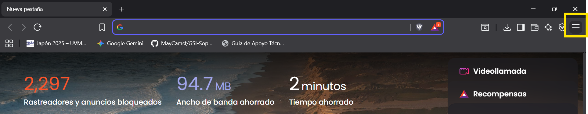
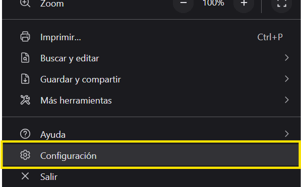
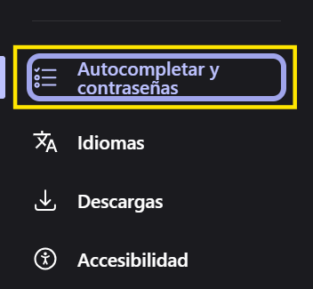
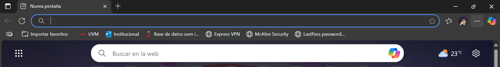
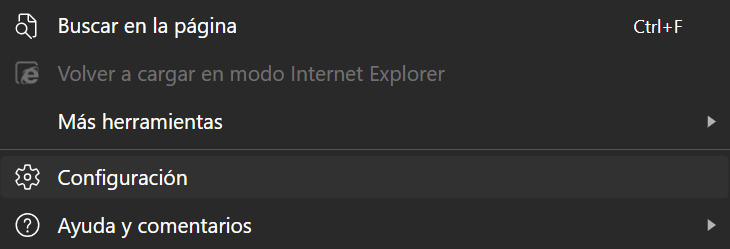
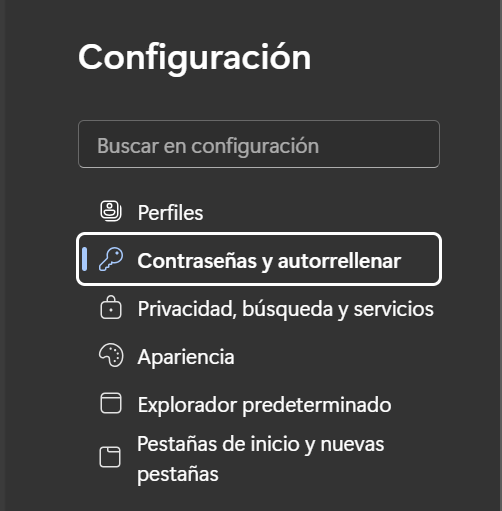
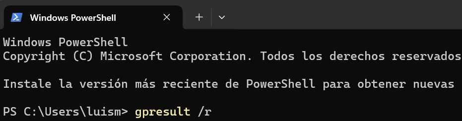
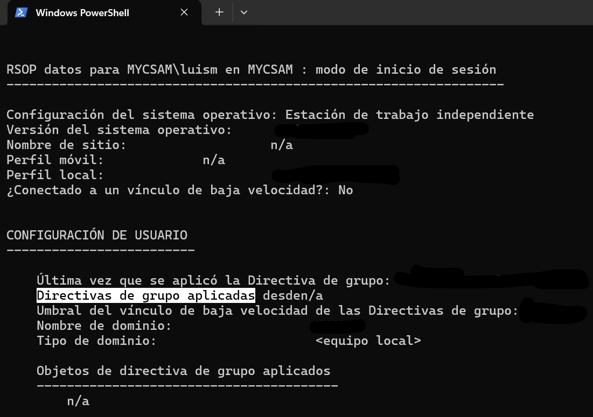
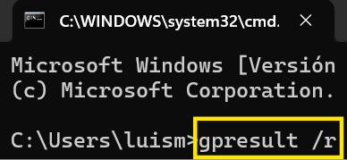

Guía de Gestión para Equipos Windows
Instrucciones claras y seguras para la consulta de configuraciones clave en su estación de trabajo.
Gestión de Contraseñas en Navegadores
Administre las credenciales guardadas en sus navegadores para mantener la seguridad y el control de sus accesos.
Google Chrome
- Paso 1: Abra Chrome y haga clic en el ícono de tres puntos (⋮) en la esquina superior derecha. 
- Paso 2: Seleccione "Configuración" en el menú desplegable. 
- Paso 3: Vaya a "Autocompletar y contraseñas" y luego a "Gestor de contraseñas de Google". 
- Paso 4: Aquí podrá visualizar, editar o eliminar las contraseñas guardadas para cada sitio web.
Microsoft Edge
- Paso 1: Abra Edge y haga clic en el ícono de tres puntos (…) en la esquina superior derecha. 
- Paso 2: Seleccione la opción "Configuración". 
- Paso 3: En el menú de "Perfiles", seleccione "Contraseñas" para acceder al gestor. 
Cómo Desactivar el Guardado de Contraseñas
Para evitar que el navegador ofrezca guardar sus credenciales, siga estas indicaciones:
- Chrome: En el "Gestor de contraseñas", vaya a "Configuración" y desactive "Preguntar si quiero guardar contraseñas".
- Firefox: En "Privacidad y seguridad", desmarque "Preguntar para guardar inicios de sesión y contraseñas".
- Edge: En la sección "Contraseñas", desactive "Ofrecer la posibilidad de guardar contraseñas".
Verificación de Políticas de Seguridad del Equipo
Utilice estos comandos de solo lectura para consultar las políticas de grupo aplicadas por TI en su equipo, sin necesidad de privilegios de administrador.
Opción 1: Windows PowerShell
- Paso 1: Busque "PowerShell" en la barra de búsqueda de Windows y abra la aplicación.
- Paso 2: En la terminal, escriba el siguiente comando:
gpresult /r

- Paso 3: Presione Enter. Desplácese hasta la sección "Directivas de grupo aplicadas" para ver el listado de políticas. 

Opción 2: Símbolo del Sistema (CMD)
- Paso 1: Busque "cmd" o "Símbolo del sistema" y abra la aplicación.
- Paso 2: El proceso es idéntico. Ingrese el comando:
gpresult /r

- Paso 3: Presione Enter y localice la sección "Directivas de grupo aplicadas".